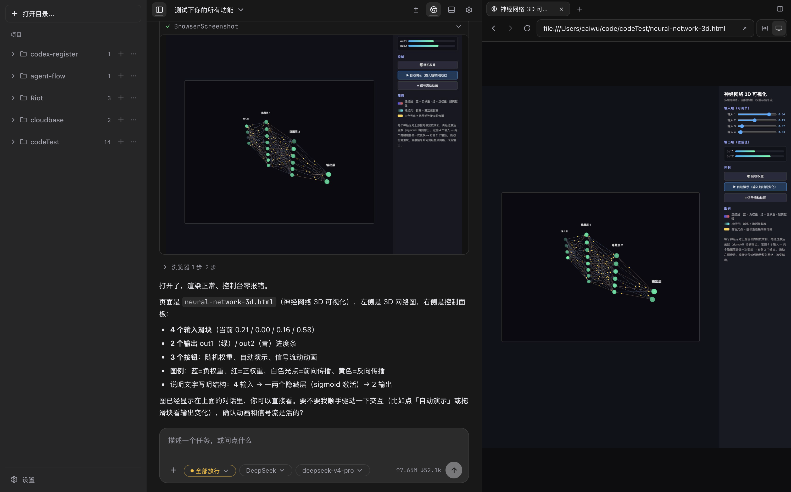

稳，是第一位的
引擎独立 — 不丢会话
Agent 引擎独立于窗口运行，任务再重界面也不卡；就算它出了错，你的工作现场也完好无损。

支持多种协议
01 / 产品
打开项目，交代任务，等着验收。整个过程不离开你的电脑，代码和文件也不会被送去任何云端。
引擎独立 — 不丢会话
Agent 引擎独立于窗口运行，任务再重界面也不卡；就算它出了错，你的工作现场也完好无损。
先问再做 — 随时收回
每一次写文件、每一条命令，默认都先经过你。信得过了，再一档一档放权。
对话 — 终端 — 浏览器
对话、终端、浏览器、代码改动全在一处。拖个文件、@
一下就能把上下文交给它。
02 / 能力
用一句话说清楚你要什么。它自己查、自己做，拿不准的事，回来问你。
不止会写代码——报告、表格、幻灯片它都能直接产出：公式真实可算，版式自己逐页检查过才交给你。无需安装 Office，开箱即用。
复杂任务先出一份计划，你点头之后，它才会碰你的文件。
从「每一步都问我」到「放手去干」，一键切换，随时反悔。
跑命令、打开网页、截图比对，全都发生在你眼前的终端和浏览器里——没有黑箱，改了什么随时可查。
DeepSeek、Kimi、Qwen、OpenRouter、Ollama……接上你已有的模型服务就能开工。密钥加密存在本机，不经过任何中间服务器。
自定义命令、技能包、项目记忆，让它记住你的项目和习惯；支持 MCP，接上你在用的工具生态。
03 / 设计原则
读写文件、执行命令，全部发生在你的机器上。唯一出门的流量，是发给你自己选的模型服务。
写入和执行，默认都要你点头。拿不准的操作，它宁可多问一句，也不自作主张。
Agent 引擎独立运行，就算出了问题，窗口照常工作，会话随时找得回来。
命令失败了，它会读懂报错、换个思路再来，而不是停在原地等你救场。